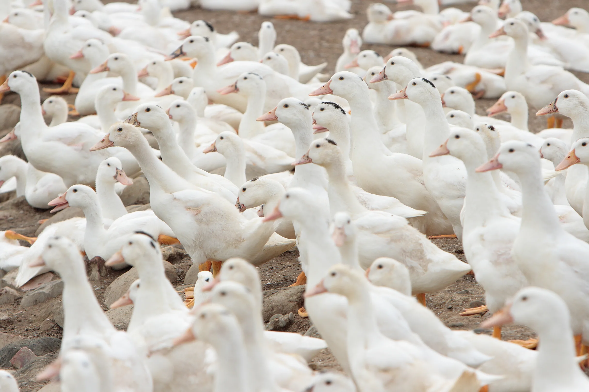
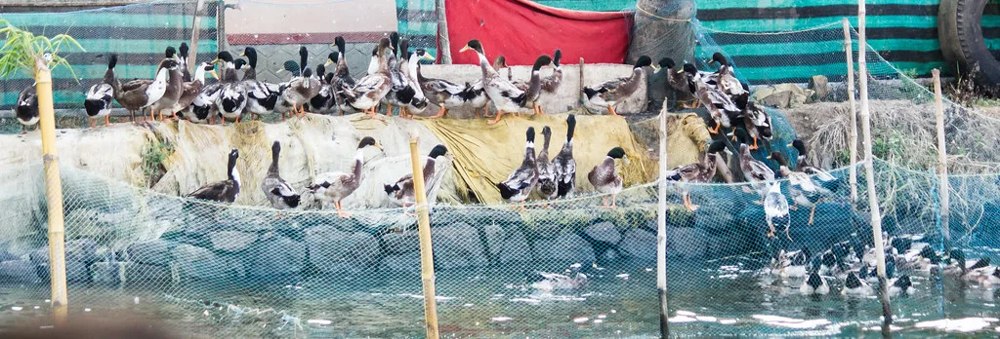

농림축산식품부는 전남 장흥의 한 육용오리 농장에서 고병원성 조류인플루엔자(AI) 감염이 확인됐다고 6일 밝혔다. 확진 바이러스는 H5N9형으로, 해당 농장은 육용오리 약 2만2000마리를 사육하고 있었다. 방역 당국은 확진 사실이 확인되자마자 해당 농장에 대한 이동 통제와 긴급 방역 조치에 들어갔다.
이번 사례는 올겨울 들어 두 번째로 확인된 고병원성 AI 발생이다. 앞서 지난 3일에는 경기 연천군 신서면의 산란계 농장에서 올겨울 첫 고병원성 AI가 확진된 바 있다. 당시 농장은 산란계 약 9만1000마리를 사육하고 있었으며, 당국은 발생 하루 만인 5일 긴급 가축처분을 완료했다. 연천에 이어 장흥에서도 확진 사례가 나오면서, 겨울철 철새 이동이 본격화하는 시점과 맞물려 전국적인 확산 가능성에 대한 우려가 커지고 있다. 두 농가는 각각 산란계와 육용오리로 사육 품종이 다른 데다 지역적으로도 경기와 전남으로 거리가 떨어져 있어, 바이러스가 특정 지역에 국한되지 않고 넓은 범위에서 동시다발적으로 유입되고 있다는 분석에 힘이 실린다.

방역 당국은 장흥 발생 농장을 중심으로 방역관리 범위를 설정하고 집중 검사에 나섰다. 6일부터 오는 13일까지 장흥군 내 모든 오리 농가와, 발생 농장이 속한 계열사의 전국 계약 사육 농가를 일제히 검사하기로 했다. 또한 오리 농가의 입식과 출하 간격은 기존보다 짧은 1일 이내로 단축하도록 했고, 출하가 끝난 뒤 14일 동안은 새로운 오리를 들이는 입식 자체를 제한하기로 했다.
발생 농장이 속한 계열사 도축장에 대한 검사도 한층 강화됐다. 해당 계열사 도축장으로 출하하는 농가에 대한 검사 비율을 향후 14일간 기존 30%에서 60%로 두 배 상향 조정하기로 했다. 바이러스가 유통 단계를 거쳐 다른 지역 농가로 번지는 것을 차단하겠다는 취지다. 농식품부는 또 발생 농장 반경 10㎞ 안쪽을 방역관리지역으로 묶어 역학 관련 농가들에 대한 정밀검사와 집중소독을 병행하고 있다고 설명했다.

지난겨울의 피해 규모를 돌아보면 올겨울 방역 당국의 긴장감을 이해할 수 있다. 지난해 겨울에는 전국 가금 농장 62곳에서 고병원성 AI가 발생해 약 1349만 마리에 이르는 가금류가 살처분됐다. 피해는 특정 지역에 국한되지 않고 전국 곳곳의 산란계·육계·오리 농가로 번졌으며, 그 여파로 한동안 계란값 등 가격 변동이 뒤따르기도 했다. 겨울철마다 반복되는 철새발 바이러스 유입은 양계·양오리 농가의 경영에 직접적인 타격을 주는 것은 물론, 계란과 닭·오리고기 수급에도 영향을 미쳐온 만큼 올해도 비슷한 피해로 이어질지가 관심사다.
방역 당국은 겨울철 철새 이동이 절정에 이르는 시기가 아직 더 남아있는 만큼, 추가 발생 가능성에 대비한 선제적 대응이 중요하다고 보고 있다. 전국 지방자치단체들도 관내 가금 농가를 대상으로 소독과 예찰을 강화하는 등 자체 방역 태세를 점검하고 나섰다. 당분간 전국 각지의 가금 농가와 철새 도래지를 중심으로 추가 확진 사례가 나오는지 여부에 전국적인 관심이 집중될 전망이다. 농가에서는 출입 차량과 사람에 대한 소독을 철저히 하고 야생조류 접근을 차단하는 등 기본적인 방역 수칙을 지키는 것이 무엇보다 중요하다는 당부가 이어지고 있다.